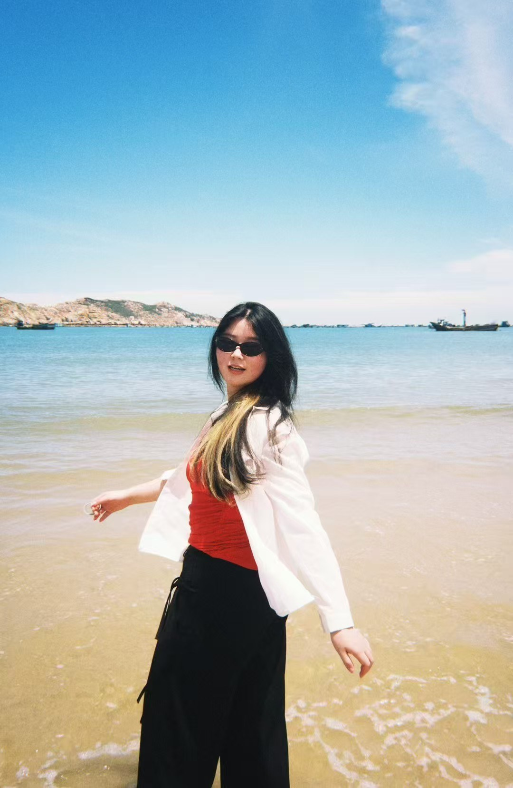
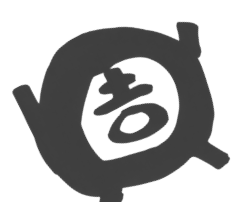

HELLO / THIS IS ME

A WEEK OF CURIOSITY
這一周，又在想什麼？
七天 / 七种打开方式SUNDAY / OFF DUTY, IN LIFE
周末，恢復气血中。
出门走走，顺便收集一点光。有时候收获灵感，
有时候只是休息。都很好。

yuringPORTFOLIO / 2026
A WEEK OF CURIOSITY
SUNDAY / OFF DUTY, IN LIFE
有时候收获灵感，
有时候只是休息。都很好。